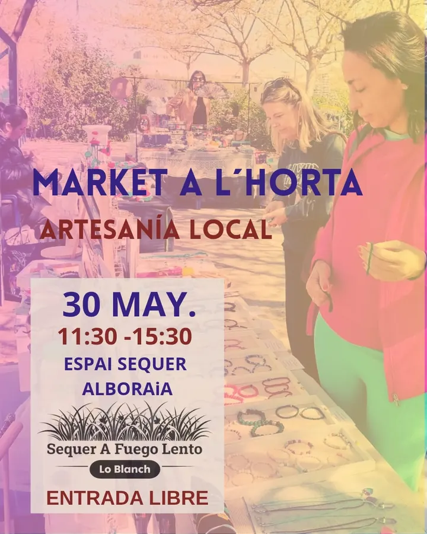
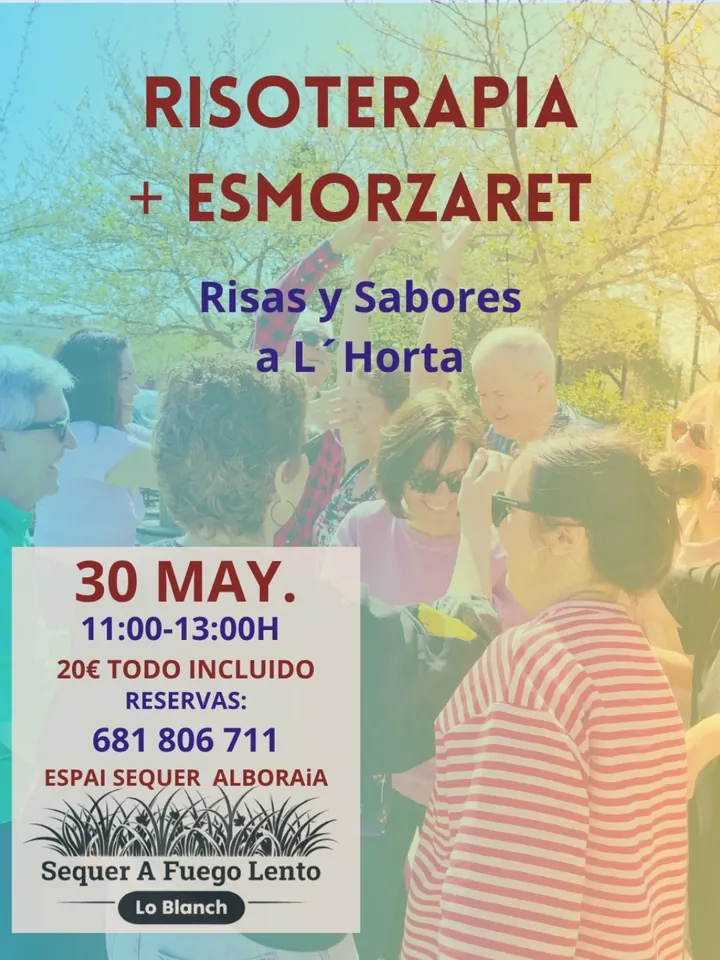
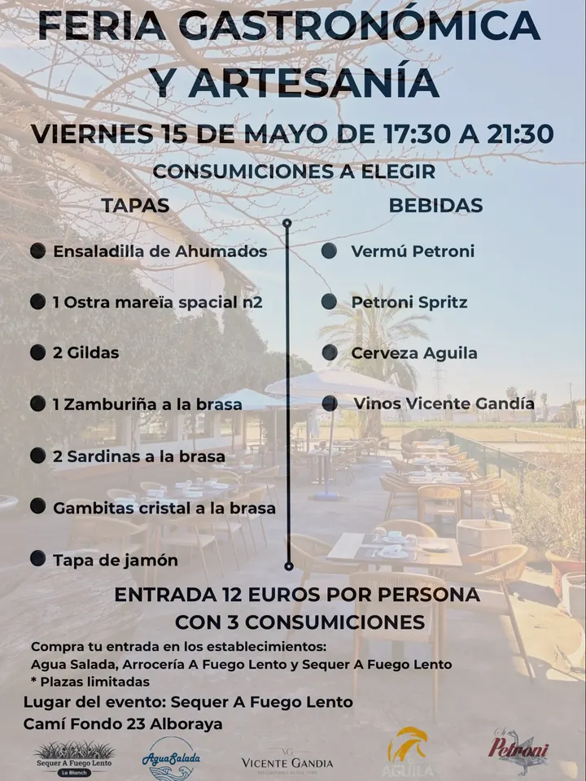
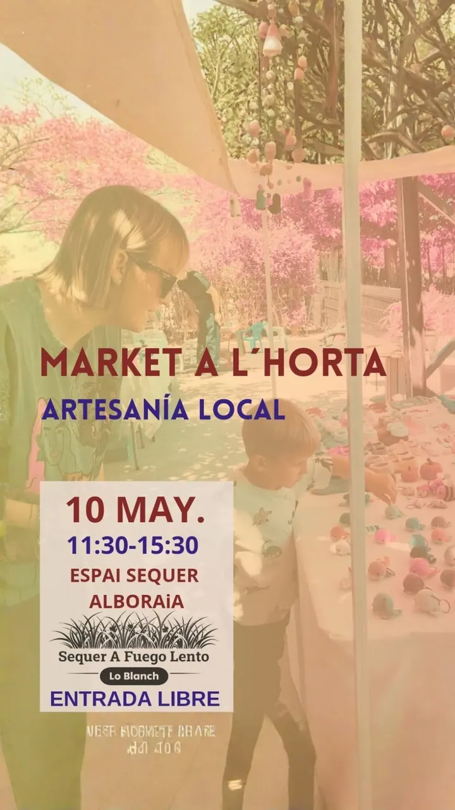
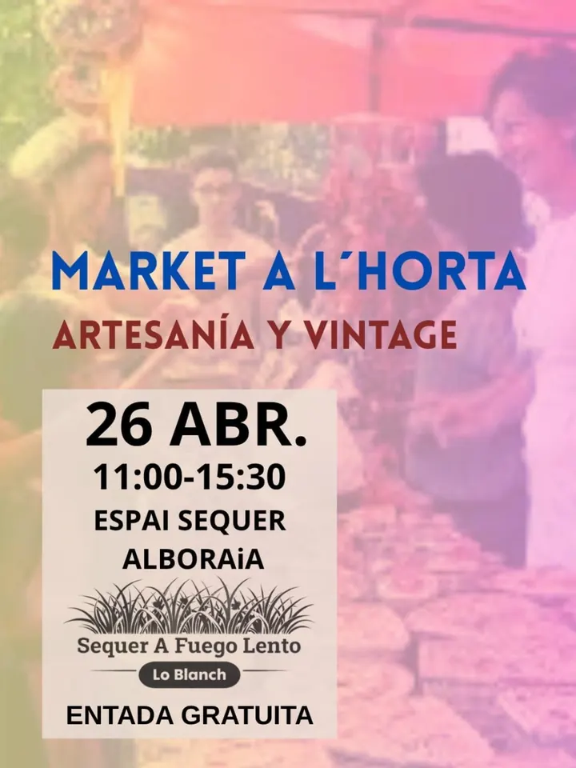
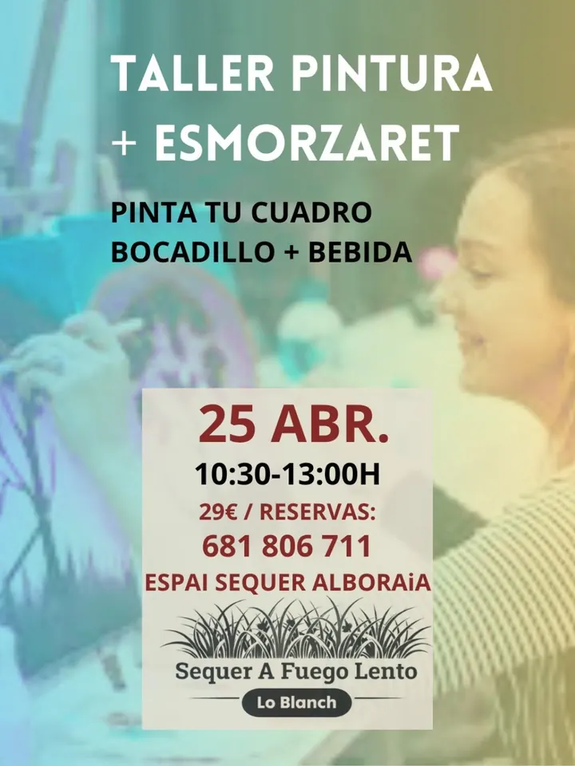

· 11:30–15:30
Market a l'horta: artesanía local
Artesanía hecha con cariño por creadores de la zona.
Entrada libre
Agenda
Artesanía local, vintage, talleres para peques y mayores, y siempre un buen almuerzo en la huerta.

Ahora mismo no hay fechas cerradas. Las anunciamos primero en Instagram · @sequerloblanch.

· 11:30–15:30
Artesanía hecha con cariño por creadores de la zona.
Entrada libre

· 11:00–13:00
Taller de risoterapia y, después, almuerzo típico valenciano.
Con reserva · 20 € todo incluido

· 17:30–21:30
Tapas y bebidas a elegir, artesanía y buen ambiente.
Con entrada · 12 € con 3 consumiciones

· 11:30–15:30
Piezas únicas y talento de aquí.
Entrada libre

· 11:00–15:30
Mercado de artesanía y vintage para toda la familia.
Entrada libre

· 10:30–13:00
Pinta tu cuadro en la huerta y después, bocadillo y bebida.
Con reserva · 29 €
Piezas únicas, detalles especiales y mucho encanto en plena huerta.
Entrada libre